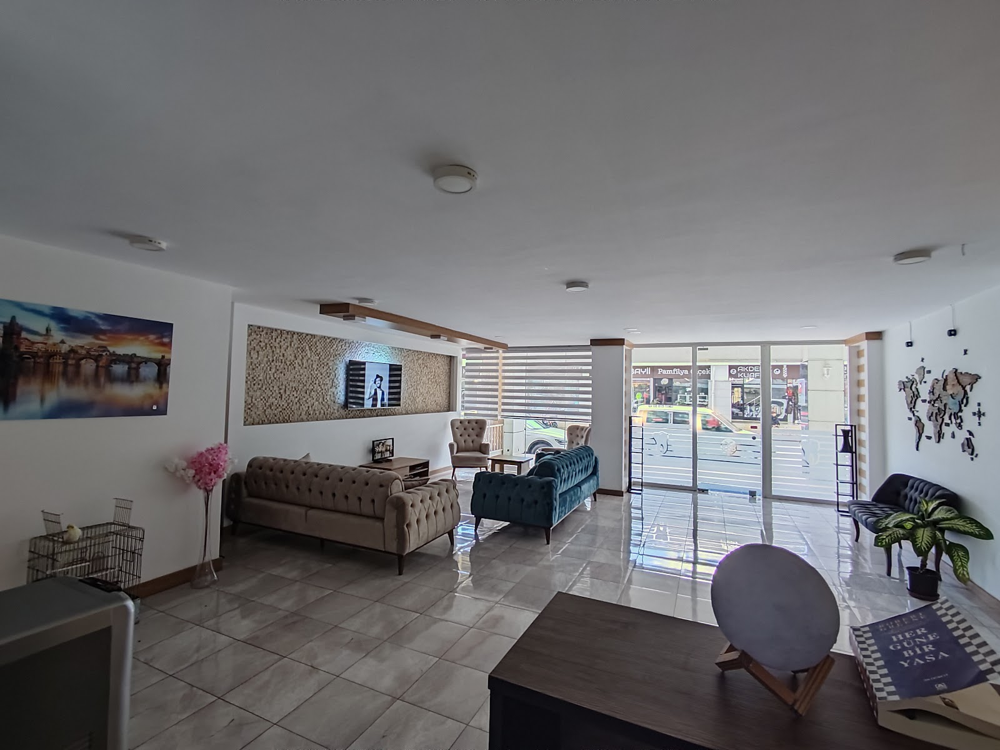
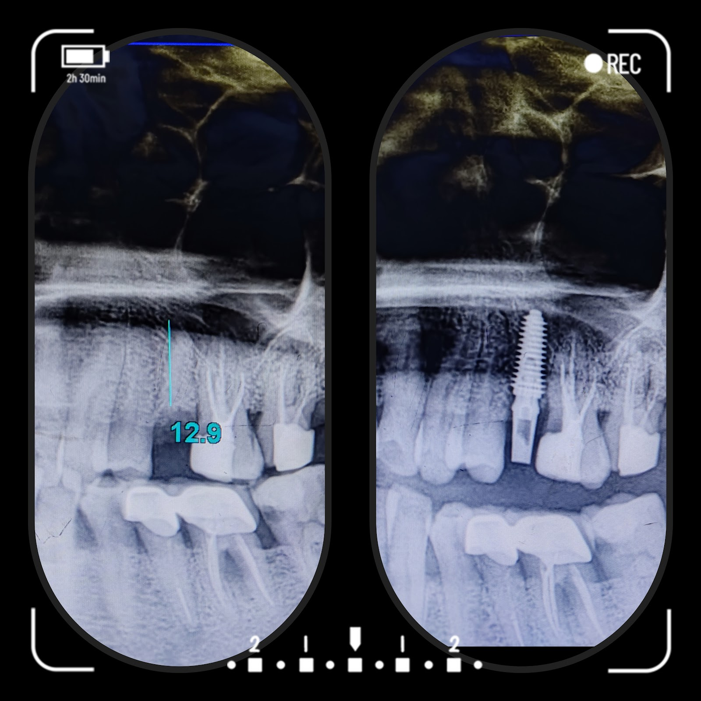
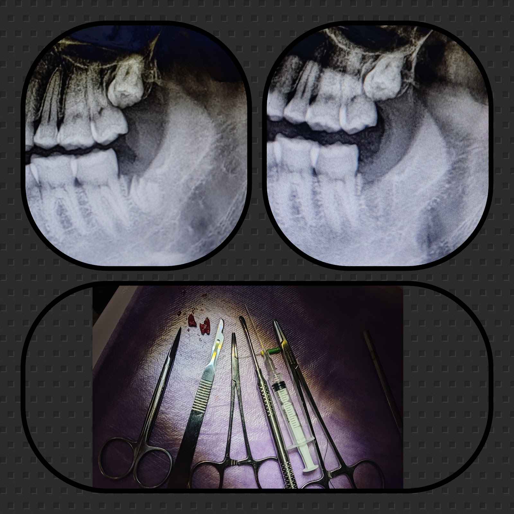
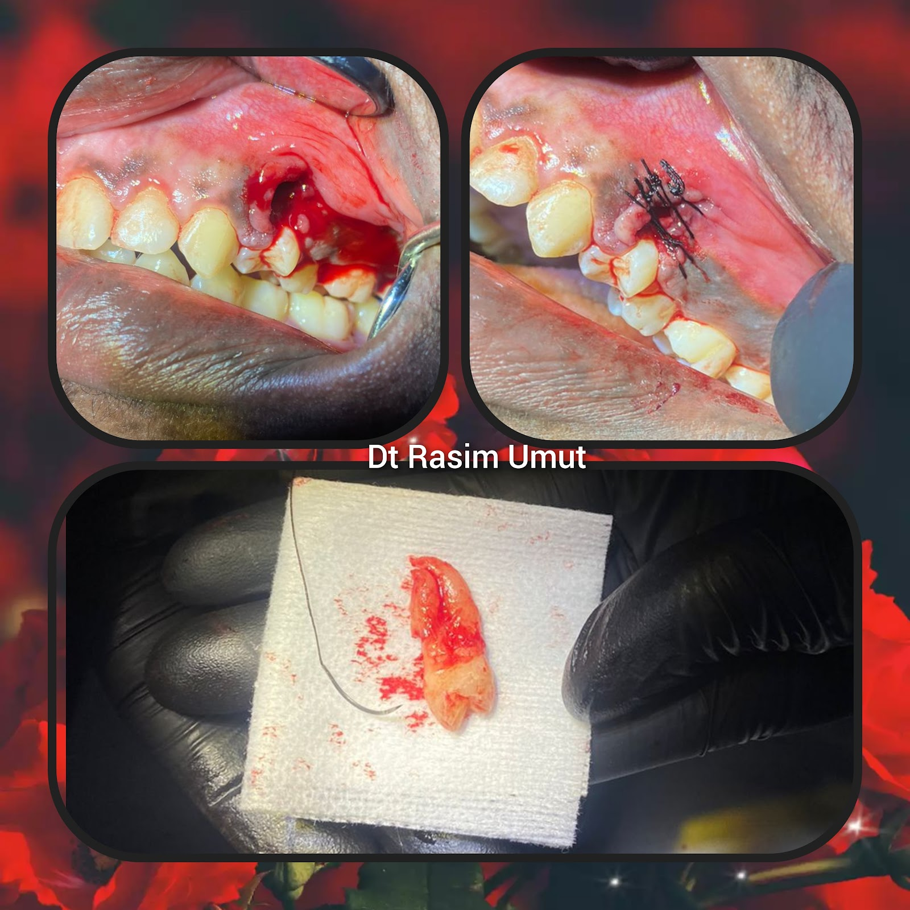

Merkez Mahallesi'ndeki kliniğimizde, diş sağlığı sorunlarınıza modern yöntemlerle ve özenli bir yaklaşımla çözüm sunuyoruz. Sağlığınızı korumak için buradayız.
Selfie yükleyin, dişlerinizi çerçeveleyin, kaydırın. Fotoğrafınız telefonunuzdan çıkmaz.
Önce fotoğrafınızı yükleyin.
Simülasyon fikir vermek içindir; gerçek sonuç muayene ve dijital gülüş tasarımı (DSD) ile planlanır.
Tedavilerinizi seçin: tahmini fiyat aralığı, Antalya'da kalmanız gereken gün ve gün gün planınız anında çıksın.
Dişin iç yapısındaki dokuların temizlenerek enfeksiyonun giderilmesi işlemidir.
Onarılamayacak durumdaki dişlerin uzman hekim kontrolünde güvenle çekilmesi sürecidir.
Dişlerin yüzeyini korumak veya estetik görünümünü düzenlemek için uygulanan yöntemlerdir.
Aniden gelişen diş ağrıları ve acil durumlar için kliniğimizde destek alabilirsiniz.
Çürük nedeniyle zarar görmüş diş dokusunun uygun materyallerle onarılması işlemidir.
Diş ve diş eti sağlığınızın düzenli olarak takip edilmesi ve korunmasıdır.




Tedavi sürecinin her aşamasında özenli ve planlı hareket ederek diş sağlığınızı önemsiyoruz.
Tedavi süreçlerini detaylandırarak merak ettiğiniz her konuda sizi bilgilendiriyoruz.
Hastalarımızın konforunu ön planda tutan, nazik ve dikkatli bir uygulama yaklaşımı benimsiyoruz.
İhtiyaç anında size yardımcı olabilmek için özveriyle çalışıyor, süreçleri hızla yönetiyoruz.
📍 Merkez mahallesi lise caddesi Hasan Ergen apt, Merkez, D:16 A, 07980 Kemer/Antalya
🕑 Pzt–Cmt 10:00–23:00 · Paz 09:00–23:00
360° GÖRÜNÜM
Görüntüyü fareyle ya da parmağınızla çevirin; bulunduğumuz sokağı ve girişimizi 360° gezin, gelirken zorlanmayın.
Görüntü: Google Street View · Yol tarifi al